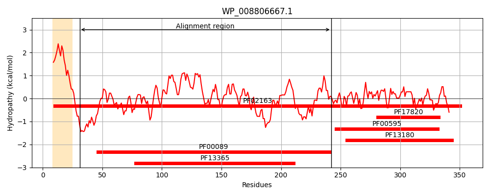
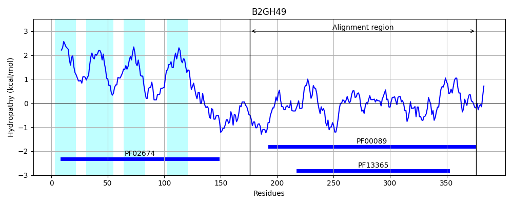
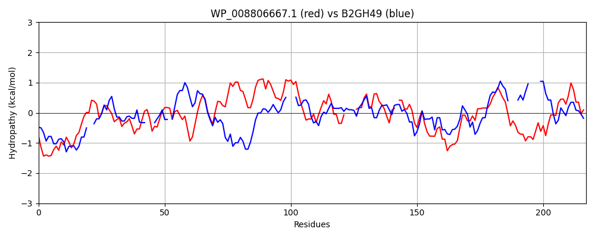

Hit Accession: B2GH49
Hit TCID: 9.B.160.1.10
Hit Description: gnl|BL_ORD_ID|1701 gnl|TC-DB|B2GH49|9.B.160.1.10 Putative S1C family peptidase OS=Kocuria rhizophila (strain ATCC 9341 / DSM 348 / NBRC 103217 / DC2201) GN=KRH_04540 PE=4 SV=1
Mach Len: 217
e:0.000000
Query TMS Count : 1
Hit TMS Count: 4
TMS-Overlap Score: 0.000000
Predicted Substrates:None
BLAST Alignment:
Score: 200 , Bit scores: 81 bits, E-value: 3.1e-17, Alignment length: 217, Percentage identity: 30
Query: 31 LTPTTQNDTADDSPVSYNAAVRRAAPAVVNVYNRALNSTSHNQLTLGSGVIMDQRGYILTNKHVINDADQIIVALQDGRVFEALLVGSDTLTDLAVLKINATGGLPVIPINPKRTPHIGDVV----LAIGNPYNLGQTITQG-IISATGRIGLNPTGRQNFLQTDASINHGNSGGALVNSLGELMGINTLSFDKSNDGETPEGIGFAIPFQLATKIM 242
L PT D+P S A A +VV VY A + GSG + Q G ++TN HV+ DQ +V +DGR + A V D +DLAVL+I LP P++ T G+ V +G PY L QG ++ + T ++ +Q + GNSGG L+++ G ++G+ F K+ + +G+AIP +++
Sbjct: 176 LFPTQAAPDPKDTPDSQTVA--DAGQSVVQVYGTAAKCAQNQT---GSGFVA-QPGTVVTNAHVVAGVDQPVVETRDGRAYPARTVQYDAASDLAVLRI---PDLPEAPLSMDGTVSQGEAVSFAGYPLGGPYTLRAATVQGQAVAPVQNVTTGETQTRSIIQIAGKVEQGNSGGPLLDADGHVVGV---VFAKA----VQDQVGYAIPVDRVREVL 376 | Protein Hydropathy Plots: |
|---|
|  |  |
Pairwise Alignment-Hydropathy Plot:
|
|---|
|  |